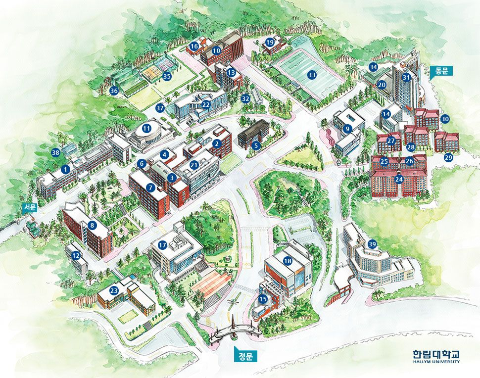

강의실 찾기
강의실 번호나 시설명을 검색하면 위치를 알려드려요.
검색 예시

지도에 초점을 두고 더하기·빼기 키로 확대·축소, 방향키로 이동, Home 키로 전체 보기를 할 수 있습니다.
등록된 호실은 uhdiro의 건물·층별 자료로 안내하며, 없는 번호는 건물 번호 + 층 + 호수 규칙으로 추정합니다.
시설 안내는 한림대학교 캠퍼스맵과 제공된 상세 자료를 바탕으로 합니다. 층수 정보가 없는 시설은 건물까지만 안내합니다.